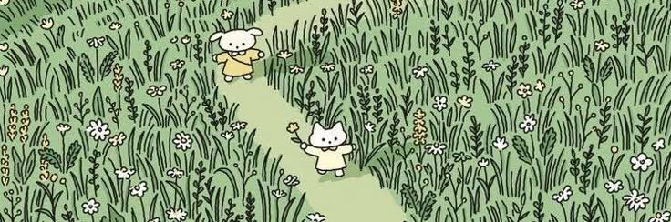

Hi Baby 👋
This is the Project I've been working on for the past few months.
Sa mga oras na nasa store ako ng starby, at nag-tataka ka kung ano yung ginagawa ko. Ito po iyon sksksks, actually matagal ko ng binabalak tong tapusin.
kaso may mga times na tinatamad ako at nawawalan ng focus pero aaminin ko naman 😔🤚.
Pero don't worry, hindi naman pinapabayaan yung work ko, during free time ko lang ito ginagawa, hehezxc. But anyways, Happy Monthsary Baby! ito yung journey natin na I've compiled,
kaya I apologize in advance if may mga moments na hindi ko naisama dito na importante sayo or di ko naalala ilagay. 🥹
Enjoy reading this throwback digital journal na ginawa ko.💚
Tap mo lang anywhere outside this message to start the throwback.
